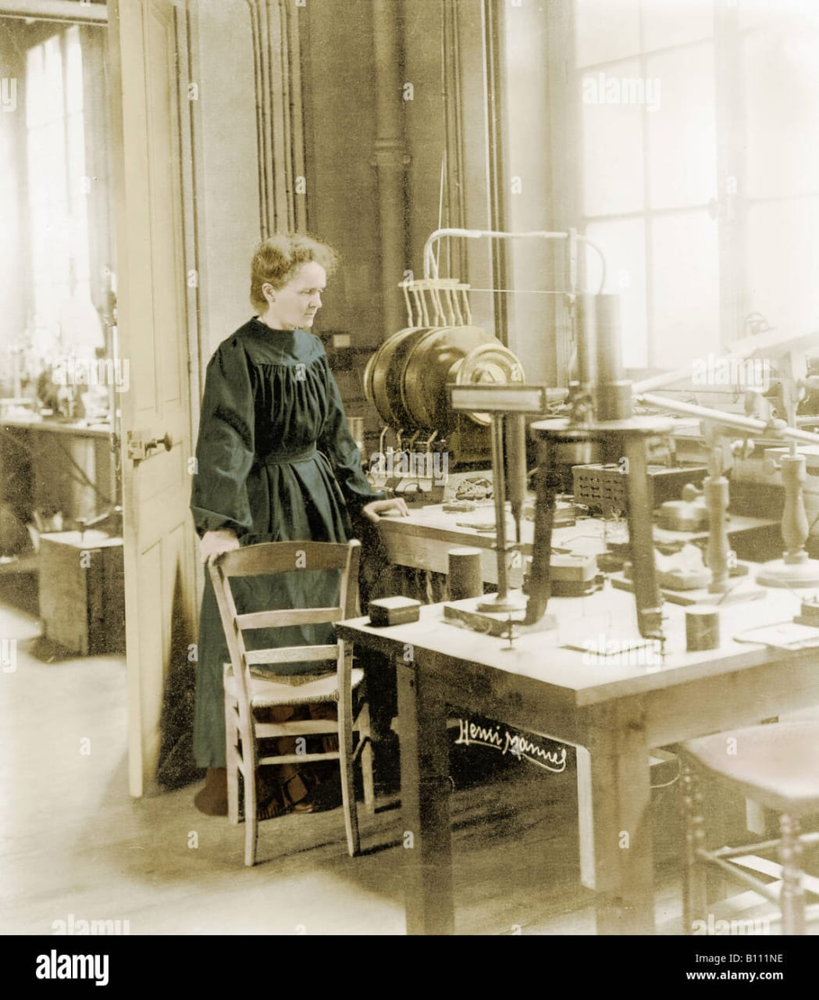

Marie Curie: Pioneering Physicist and Chemist

Marie Curie in her laboratory, 1911. Source: Wikimedia Commons.
Timeline of Marie Curie's Life:
- 1867: Born Maria Skłodowska on November 7th in Warsaw, Poland.
- 1891: Moves to Paris to attend Sorbonne, meets Pierre Curie.
- 1895: Marries Pierre Curie, begins research on radioactivity.
- 1898: Discovers polonium (Po) and radium (Ra) with Pierre.
- 1903: Awarded Nobel Prize in Physics with Pierre and Henri Becquerel.
- 1911: Awarded Nobel Prize in Chemistry for radium research.
- 1914-1918: Develops mobile X-ray units during World War I.
- 1934: Dies on July 4th from radiation exposure.
Achievements:
- First woman to win a Nobel Prize
- First person to win two Nobel Prizes in different fields
- Pioneered radioactivity research
- Founded Curie Institutes in Warsaw and Paris
Legacy:
Marie Curie's groundbreaking work paved the way for advancements in medicine, energy, and scientific research. Her determination and perseverance inspire future generations of scientists and women in STEM.
Resources:
- "Marie Curie: A Life" by Susan Quinn
- The Curie Museum (Warsaw)
- (link unavailable) (Marie Curie)